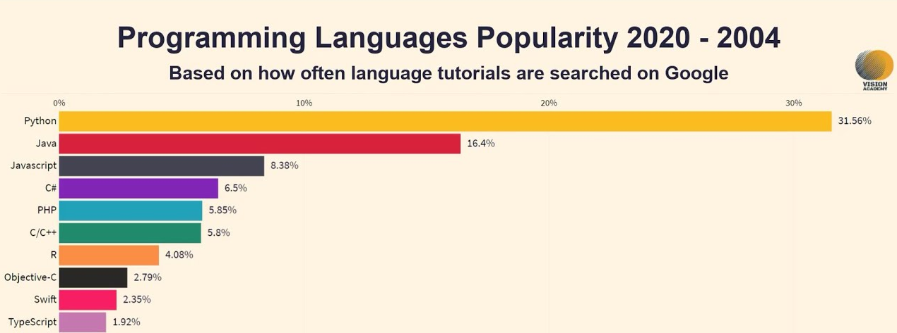

Getting Started With Coding!
January 29, 2022
So, you’ve decided you want to get into coding. That statement alone is a gateway to infinite possibilities. However, there is a logical and easy way for beginners to get started with coding and eventually build a career out of it.
What can coding be used for?
Before choosing a language to code in, you have to decide, “What am I going to do with coding?” In the modern world,
code is used literally everywhere, from your computer’s software to the websites on the internet, from your phone’s
apps to your favorite video games. Coding can create a number of things, such as mobile applications, websites, games,
desktop applications, and even operating systems such as Windows 10 or MacOS.
It can even teach you practical skills, such as getting better at using computers, committing to goals, reading efficiently and more.
Popular Programming Languages
Here is a chart of the most popular programming languages since 2004:
Best programming languages to learn
- HTML (HyperText Markup Language) - The foundation for all websites. Creates elements for the structure, layout, and the contents of a web page
- CSS (Cascading Style Sheets) - Used to style websites. CSS describes how HTML elements appear on the page.
- JavaScript - A programming language that can run scripts (logical code) within a browser (or within a coding environment with Node.JS)
- Python - A powerful programming language that is used for data science, machine learning, and software development. Python is Object-Oriented (user creates objects, then performs operations on those objects with methods)
- SQL - Used to communicate with a database. You can use it to make requests to the database
- Java - A general purpose programming language, used for making web servers and mobile applications
- C# - A general purpose programming language, used to create Windows 10 system applications and web services. Primarily used by Microsoft (see their .NET framework)
- C++ - An extremely powerful programming language, also very hard to learn. Used to create high performance desktop applications, such as PC games. Examples: GTA V, The Witcher III, CS:GO
What do you want to do with coding?
Now that you know what coding is used for, it’s time to decide what you want to do with it.
General Programming Skills - Skills that every programmer should have in their inventory.
- Github, IDE (VSCode), CLI, File Explorer
Web Development - Creating websites is arguably the most popular career choice for beginner programmers. If you want to learn web development, you’ll want to know:
- Beginners - HTML, CSS, JavaScript, VS Code, Hosting
- Intermediate - React, Express, MongoDB, Wordpress, Advanced CSS
Data Science - Analyzing, organizing, presenting data. Also involves creating complex machine learning algorithms for AIs to make predictions. Useful tools include:
- Beginners - Python, Jupyter, Pandas, Numpy, Matplotlib
- Intermediate - Scikit, Data Structures
- Advanced - Tensorflow, OpenCV
Game Development - Can make a range of games, from simple 2D browser games to full-scale 3D desktop games. Useful tools include:
- Beginners - HTML5, JavaScript
- Intermediate - Python
- Advanced - C++
Have fun coding!
Now that you have an idea of what your goal is, the next step is to start learning programming! However, finding useful tutorials may be difficult and time-consuming, so here's a link to the best coding resources in my opinion.